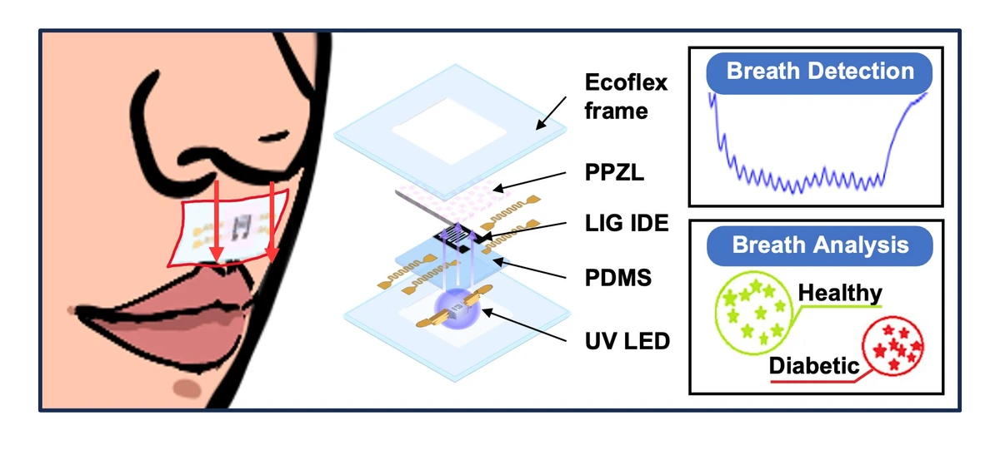
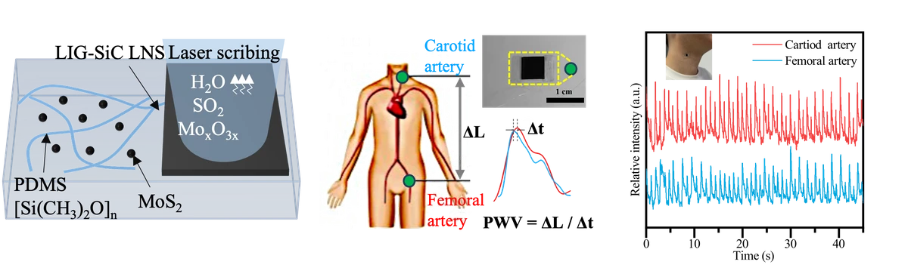
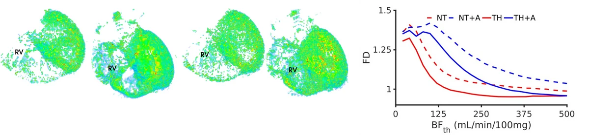
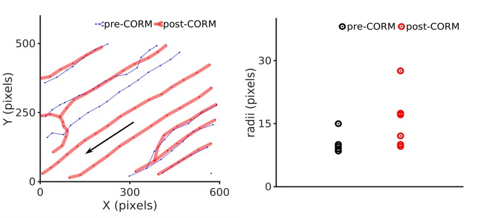
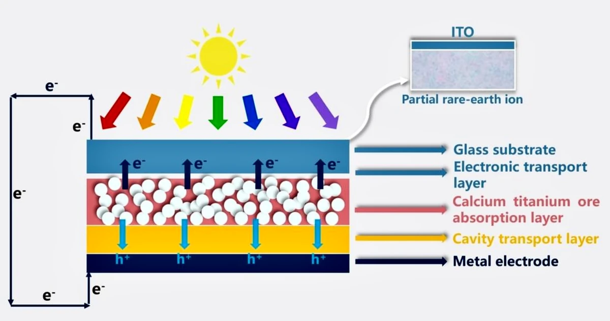

CHIME DATE 2026 (Accepted)
Chiplet-based heterogeneous near-memory acceleration for edge multimodal LLM inference.
Ph.D. Candidate · UC San Diego
Yanru is a Ph.D. candidate in Electronic and Computer Engineering at the University of California San Diego. She works with Prof. Tajana Rosing in the Systems Energy Efficiency Lab (SEELab). Outside of her academic work, Yanru enjoys singing and won the Audience Favorite Award in Jilin University singer competition.
2017 – 2021
B.S. in Electronic Science and Technology
2018 – 2020
B.A. in International Economy and Trade
2021 – 2024
M.S. in Electronic Information
2024 – 2027 (Expected)
Ph.D. in Electronic and Computer Engineering
Chiplet-based heterogeneous near-memory acceleration for edge multimodal LLM inference.

Recursive APSP using processing-in-memory for dynamic programming on large graphs.

In-storage SQL database search using hyperdimensional computing on FeNAND flash.

Heterogeneous PIM architectures for scalable AI and graph reasoning (work in progress).



docs/ and link as docs/xxx.pdf. Thumbnails already use your existing images.

Semiconductor metal oxide (SMO) gas sensors are low‐cost, real‐time, and long‐lasting but usually need elevated temperatures. We developed a flexible, room‐temperature sensor using UV‐assisted design by embedding ZnO nanoparticles into a PDMS porous framework. An innovative low‐modulus island‐bridge structure allowed 60% stretchability.

Novel flexible strain sensor based on LIG–SiC laminated nanosheets with strong stability and accuracy in PWV tests.

Texture analysis using improved fractal dimension metrics for CT perfusion imaging.

Analyzed microvascular network changes induced by CORM2 using intravital microscopy and network extraction.

Photochromic solar cell with dynamic color‐changing ability without consuming its own generated energy.


Contributed to a neuroscience project using texture analysis to extract microvascular signals and reconstruct 3D images. Presented two papers at EMBC 2020.

Visited NUS/NTU, attended lectures on semiconductor materials, and participated in academic discussions.

Attended workshops on micromaterials and devices, visited labs, and broadened interdisciplinary research perspective.